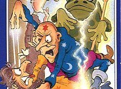

Number Twenty-Seven - Learic and LeanoricZombies walked the landscape. Passers-by became doppelgangers. Flames flew. And two men in rather silly looking clothes wandered around looking for herbs that even the Drugs Squad didn’t know about. If there had been one, that is. Because this was the Speccy, and this was Feud. The greatest feud of all, in fact: two wizardly brothers torn apart by an argument about who got the last Toffee Cream Slice. (Are you quite sure about that? Ed.). Er, yes, it really was. Probably. (Glad to see your research is up to its usual standards. Ed.) Alright, I don’t know. Sorry. (Well there goes your 'Journalist of the Year' nomination. Ed.) So Learic, the good guy who had suffered years of cake deprivation... (Start again. Ed.) Sorry. I mean, who had suffered years of, er, suffering (Well put. Ed.) and Leanoric (the other one) each went to his own cauldron and began to wage weird and wacky wizardly war in the world. At the centre of all this was a huge herb garden, presided over by Leanoric’s friend called, erm, Herb. (I won’t even ask. Ed.) And so Leanoric could stroll in whenever he wanted to pick up the finest ingredients for his dastardly spells. Learic, meanwhile, found himself up against not only Herb’s life-draining powers, but also Leanoric’s strange ability to walk through walls as soon as he got off the same screen. (That's the programming. Jon) Tch. Amazingly, against all the odds, Learic won the war. A well aimed lightning spell passed directly from Leanoric’s eyebrows through his skin to his brain, causing him to lose his entire recollection of fighting, and in a bizarre twist, gave him the desire to serve his brother for the rest of their lives. To this day, Leanoric can be seen wandering around the landscape chatting with the peasants and collecting Learic’s herbs. Sometimes he can be seen walking backwards with a slightly perplexed expression, for Learic has never quite forgiven his brother. On nights when the only things on television are Coronation Street and a Channel 5 ‘documentary’ about strippers, he often takes the opportunity to test his spells for his own amusement. And so the story drifts on into obscurity. While Herb spends his days aimlessly strolling around his garden, Learic and Leanoric are beginning to grow old with only each other for company. Three men for whom time has said ‘I’m coming for you, so what did you do with your life?’ Three men who have seen more strange weeds than the average Cabinet. Three men who have become almost totally forgotten in the Speccyverse. Almost, that is, except by YS3. So next time you switch on your Speccy, or your emulator (sob!), why not dig out Feud, and relive some of those memories? Nostalgia is a fine thing. But then we would say that, wouldn't we? |